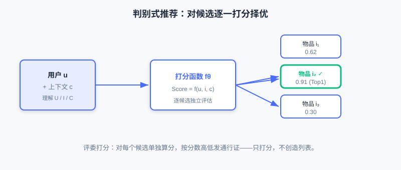
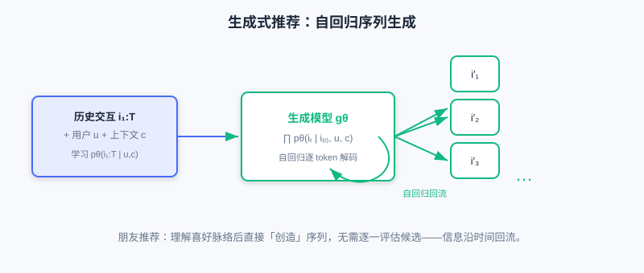

生成式推荐范式基础
📝 Before You Continue: 请先读完 1.1 的「两种根本范式」与 2.x 的判别式召回/排序。本章把「判别式」与「生成式」的对照从直觉推进到建模哲学与架构层面，是后续所有生成式章节的理论起点。
过去十余年，推荐系统从传统机器学习演进到深度学习，模型表达能力越来越强、业务指标越来越高。但有一个事实很容易被忽略： 无论模型怎么变，底层的建模范式始终没变——我们一直在做「判别」。
给定一个候选物品集合，判别式模型判断用户会不会喜欢其中某个物品，本质是一个分类或排序问题。这套体系在工业界已经非常成熟，却也逐渐暴露出深层次的局限：多阶段级联带来的目标不一致、对每个物品独立打分难以捕捉序列依赖、海量 Embedding 参数难以喂饱现代硬件。
正是在这样的背景下， 生成式推荐（Generative Recommendation） 作为一种全新范式开始崭露头角。它不再把推荐看成「对候选集打分」，而是重新定义为「序列生成任务」——模型主动学习「用户接下来会与哪些物品交互」。这一看似微妙的转变，带来了根本性的改变：从局部打分决策转向全局概率建模，从多阶段级联转向端到端优化，从固定候选集转向开放生成空间。
读完本章，你将能够：
- 写出 判别式 与 生成式 的核心条件概率公式，并解释二者「问的问题」有何不同
- 列出判别式范式在 参数效率、语义建模、多阶段级联 三方面的固有局限
- 说明生成式的 自回归建模 如何天然捕捉序列依赖、并为端到端优化打开大门
- 从 目标函数、信息流动、模型架构 三个维度对比两种范式的本质差异
- 完成 4 道分层练习题，巩固「判别 vs 生成」的建模哲学
6.1.0 判别式推荐：我们一直以来的做法
判别式推荐的核心是学习一个 条件概率分布 ，预测用户 在上下文 下对物品 产生正向交互（点击、购买等）的概率。这一建模方式直观、高效，是工业界绝对的主流。
现代深度学习推荐模型几乎都遵循「Embedding & MLP」范式：先把用户 ID、物品 ID 及各类特征通过嵌入层映射为稠密向量，再经多层感知机或更复杂的特征交互模块处理，最后输出一个标量分数，表示用户对该物品的兴趣强度。它的灵活性很高——通过设计不同的特征交互模块（FM、DeepFM、DCN 等）捕捉高阶特征交叉，通过序列建模模块（DIN、SIM 等）刻画短期与长期偏好。

判别式推荐通过整合用户特征 、物品特征 与场景特征 ，对每个候选物品逐一打分，预测「是否会产生正向交互」的概率。
💡 Key Insight: 判别式模型的输入与生成式完全相同（都要理解用户、物品、场景），但它提出的问题是「这个物品是否应该被推荐」——一个局部的、逐候选的二分类问题。
判别式范式的三道固有局限
然而，这种「对每个物品独立打分」的建模方式，也带来了三个难以根治的问题。
① 参数效率问题。 Embedding 层通常占据模型 90% 以上的参数量，但这些参数是稀疏的、低效的，难以充分利用现代 GPU/TPU 的并行计算能力。大量参数「沉睡」在稀疏 ID 查表中，硬件利用率（MFU）长期偏低。
② 语义建模缺失。 判别式模型把每个物品视为独立的 原子单元（Atomic Unit） ，物品 ID 之间没有任何语义关联。一部「科幻悬疑片」和另一部「科幻悬疑片」的 ID 在向量空间里毫无先验关联，模型只能靠海量行为数据去「死记硬背」它们的相似度，导致 冷启动 问题难以解决。
③ 多阶段级联困境。 为应对海量物品库与毫秒级延迟，工业系统不得不采用「召回—粗排—精排—重排」的多阶段级联。各阶段由不同模型负责、优化目标各不相同（召回看相关性、排序看点击率）， 全局目标难以对齐 ；更糟的是，每一次级联都会丢失信息——召回阶段因简单相似度计算过滤掉的优质物品，后续阶段 根本没有机会看到。这种逐级筛选虽保证了效率，却让系统陷入「局部最优」，难以实现真正的端到端优化。
⚠️ Warning: 这三道局限并非判别式模型的「工程瑕疵」，而是其「逐候选打分」建模范式的内在属性。想根治，就要从范式本身动手——这正是生成式推荐登场的动机。
6.1.1 生成式推荐：重新定义推荐任务
生成式推荐从根本上重新定义了推荐任务。它不再把推荐当作一个对候选集打分的判别问题，而是建模为一个 序列生成过程。给定用户 、上下文 以及历史交互序列 ，生成式推荐学习这个序列的生成概率：
这个公式看似简单，却藏着深刻的建模思想：它不再孤立地看待每个物品，而是把用户的交互行为视为一个 连续演化的过程。模型要学习的不是「某个物品是否该被推荐」，而是「在已知历史行为的条件下，用户接下来最可能与哪个物品交互」。

生成式推荐以用户历史交互序列为条件，通过自回归解码直接生成下一个（或下一段）物品，无需逐一评估候选。
🧠 Mental Model: 评委打分 vs 朋友推荐
把两种范式想象成两种人。判别式模型像一位选秀评委：台上站满选手（候选物品），评委对每一个单独打分，最后按分高低发通行证——他从不「直接报出名单」，只负责打分。生成式模型像一位很懂你品味的朋友：他不需要翻遍所有选项，而是直接说「你接下来该看这几个」，因为他已经理解了你的喜好脉络。前者是择优，后者是创造。
自回归建模为什么是分水岭
自回归建模（Autoregressive Modeling）的优势不仅在于捕捉序列依赖，更在于它为 端到端优化 打开了大门：
- 消除误差累积 ：模型一次前向传播直接生成推荐结果，无需依赖多阶段级联，从而消除了级联带来的误差累积与目标不一致。
- 支持全局目标 ：生成式模型可以优化全局目标（如用户长期满意度、平台生态平衡）做端到端强化学习，这在判别式框架下几乎无法实现。
- 自带序列依赖 ：当前时刻的预测依赖之前所有时刻的输出，天然捕捉长程行为依赖。
此外，生成式推荐在 物品表示 上也更灵活：它可以用文本描述或 语义 ID（Semantic ID） 来表示物品，这些表示天然携带语义信息，使得新物品无需积累行为数据即可被推荐，大幅缓解冷启动。
🤔 Why 这个转变很关键？ 判别式假设「候选集已由召回确定」，任务是在有限空间内排序；生成式则不预设候选集，让模型从全体物品空间直接生成。前者是「自上而下」的工程化思路，后者更接近人类决策本质——我们做选择时，往往不是对选项逐一打分，而是基于经验生成一个候选方案。
6.1.2 两种范式的本质区别
判别式与生成式的差异不只是公式不同，更深地反映在 目标函数、信息流动、模型架构 三个维度。
目标函数：局部决策 vs 全局分布
判别式模型优化的是 局部决策边界——给定候选集，学习区分正负样本，让正样本分数尽量高、负样本尽量低。这种方式直接，却局限于候选集范围，难以刻画全局物品分布。
生成式模型优化的是 完整的概率分布 。它不仅关心「哪些物品该被推荐」，更关心「整个交互序列是怎么生成的」。这种全局建模让模型更好捕捉偏好演化规律，也为多目标优化提供了更自然的框架。
信息流动：前馈独立 vs 自回归循环
判别式模型通常采用前馈网络，信息从输入层经多层变换流向输出层， 每个物品的打分独立计算——高效，却忽略了推荐列表中物品之间的依赖关系。
生成式模型采用自回归结构，当前预测依赖之前所有时刻的输出，信息在 时间维度上形成循环流动。这既捕捉长程依赖，也为引入强化学习等高级优化技术打下基础。

左：判别式前馈网络，每个候选独立打分；右：生成式自回归，信息沿时间回流，逐 token 生成。
模型架构：异构专用 vs 统一 Transformer
判别式系统为适配不同阶段，往往需要多种专用模块——召回用双塔或图网络、排序用复杂特征交互网络、重排考虑列表级约束。这些模块异构、高度定制，导致系统复杂、维护成本高。
生成式推荐则倾向采用 统一的 Transformer 架构 ，通过自注意力与前馈网络堆叠处理所有任务。其矩阵运算密集型特点与 GPU/TPU 高度契合，能实现远超判别式模型的硬件利用率（MFU），并通过简单堆叠实现参数规模化（Scaling）。
更深一层：建模哲学的差异
把视角再拉高一层，两种范式的根本区别是 建模哲学 的差异：判别式追求「在给定候选集下做出最优选择」，生成式试图「学习用户行为的生成过程」。前者适合处理明确定义的优化问题，后者更接近人类决策本质，也为推荐系统与语言模型、多模态模型的深度融合打开了新的可能性。
📊 Data Point: 需要客观指出：当前工业界完全采用端到端的生成式推荐仍面临挑战（训练成本、推理延迟、系统稳定性）。因此研究呈现三条并行路径——① 渐进式（在级联架构上借鉴 LLM 的 Scaling 能力）；② 知识增强（注入 LLM 世界知识）；③ 完全生成式（召回/排序/重排统一到一个生成模型）。本章聚焦基础，后续章节逐一展开。
下面的交互演示把两种范式并排放在一起，你可以逐步观察同一个推荐请求在「判别式打分」与「生成式序列生成」两条路径上的处理差异：
⚠️ Common Mistakes in 6.1
| # | Mistake | Example | Why It's Wrong | Fix |
|---|---|---|---|---|
| 1 | 把生成式也理解为「对每个候选打分」 | 「生成式就是换个方式算点击率」 | 生成式直接产出序列，不做逐候选评估 | 记住：判别式 择优 ，生成式 创造 |
| 2 | 认为判别式的问题只是「工程没做好」 | 「加个更大的模型就能解决级联」 | 误差累积/语义缺失是范式内在属性 | 从范式层面理解局限，而非堆叠参数 |
| 3 | 混淆条件概率的两个方向 | 把 写成 当成生成式 | 前者是序列生成分布，后者是逐候选判别 | 看清公式「条件」在哪一侧 |
| 4 | 以为生成式不需要候选集概念 | 「生成式完全没有候选空间」 | 生成式是把候选空间内化为生成分布，并非不存在 | 理解「不预设候选」≠「无物品空间」 |
本章小结
📌 Key Takeaways
| Concept | Key Points | Why It Matters |
|---|---|---|
| 判别式推荐 | ，逐候选打分 | 工业主流，成熟稳定但有三道固有局限 |
| 三大局限 | 参数低效、语义缺失、级联困境 | 推动范式转变的根本动机 |
| 生成式推荐 | 自回归、端到端、自带语义表示 | |
| 本质差异 | 目标函数/信息流动/架构三维度 | 决定能否做全局优化与 Scaling |
| 三条路径 | 渐进式/知识增强/完全生成式 | 当前工业落地的现实图景 |
❓ FAQ
Q1: 生成式一定比判别式好吗？
A: 不是。判别式在成熟场景稳定高效，生成式在端到端、冷启动、语义理解上潜力更大。当前工业界两者并行发展，应按业务阶段选择。
Q2: 自回归建模到底解决了什么？
A: 它让模型一次前向传播直接生成结果，消除多阶段级联的误差累积与目标不一致，并天然捕捉序列依赖，为端到端强化学习铺路。
Q3: 为什么说语义缺失是「范式问题」而不是「数据问题」？
A: 判别式把物品当原子 ID，ID 间无任何先验关联，只能靠行为统计「死记」相似度；生成式用语义 ID 让相似关系编码在表示结构里，从根上缓解冷启动。
🔗 前后关联
- 6.2 （生成式架构基础）承接本节「统一 Transformer」论断，展开自注意力、位置编码与两类架构范式。
- 6.3 （LLM 基础）把生成式的三阶段训练方法论（预训练/指令微调/偏好对齐）系统讲清。
- 6.4 （Codebook 量化）回答本节埋下的关键问题——生成式如何用语义 ID 表示物品。
- 1.1 （两种范式）从直觉层对照，本章把它深化为建模哲学与架构层对照。
Practice Problems
Work through all problems in order — they get progressively harder. Each has a complete solution you can reveal after trying it yourself.
Problem 6.1.1 — 区分范式 🟢 Easy
给定以下两个系统描述，判断更接近 判别式 还是 生成式 ，并说明理由。
- (a) 系统为每个候选广告计算「用户点击概率」，按概率排序展示前 5 个。
- (b) 系统读取用户近 20 次播放记录，直接输出「接下来你可能想看的 3 个视频 ID」。
💡 Solution (click to reveal)
Approach: 抓住两种范式「问的问题」差异——是逐候选打分，还是直接产出序列。
- (a) 判别式 ：对每个候选单独算点击概率再排序，正是 的「逐一打分择优」。
- (b) 生成式 ：直接由历史序列解码出推荐 ID 序列，不做逐候选评估，对应 。
Key points:
- 判别式 = 候选已知、逐一打分；生成式 = 直接「创造」序列。
- 判断关键：系统是否枚举并评估了每一个候选。
Problem 6.1.2 — 列出三大局限 🟢 Easy
请写出判别式范式在迈向生成式时被反复诟病的三道固有局限，并各用一句话说明其后果。
💡 Solution (click to reveal)
答：
- 参数效率 ：Embedding 层占 90%+ 参数却稀疏低效，硬件利用率（MFU）偏低。
- 语义建模缺失 ：物品被当原子 ID，彼此无语义关联，冷启动难以解决。
- 多阶段级联困境 ：各阶段目标不一致、且逐级丢失信息（优质物品被召回误杀后永不可见）。
Key points:
- 这三点都源自「逐候选打分 + 级联」的范式本身，不是工程能单独抹平的。
Problem 6.1.3 — 公式改写 🟡 Medium
判别式的逐候选打分可写作 。请将生成式推荐的核心公式 用自然语言复述，并指出它与判别式在「条件」一侧的本质区别。
💡 Solution (click to reveal)
Approach: 逐部分翻译公式。
答： 该公式读作「用户 在上下文 下产生整个交互序列 的概率，等于每个时刻 在已知之前所有交互 、用户 、上下文 的条件下，生成第 个物品的概率之连乘」。
本质区别：判别式的「条件」是 ——物品 是被给定的；生成式的「条件」是 ——物品是 要被生成出来的变量 ，序列内先前物品作为条件回流。前者对候选打分，后者从条件中创造候选。
Key points:
- 连乘结构 = 自回归，每个 token 依赖历史。
- 「条件侧」在物品 上有无——这是判别与生成的分水岭。
🏆 Challenge: 范式选型论证
某团队要在「日均新增 10 万物品、长尾占比高」的电商场景下重构推荐。请写约 150 字论证：为何此处生成式（语义 ID 路线）比纯判别式更具长期价值？重点结合「冷启动、参数效率、级联信息损失」三点，并指出落地时仍应保留的判别式组件。
💡 Hint
长尾/高频新物品 → 判别式原子 ID 难以积累行为、冷启动严重；语义 ID 让新物品靠内容即获表示，前缀泛化缓解长尾。参数效率上，统一 Transformer 比多阶段异构模块更易 Scaling。但仍建议保留判别式 召回/重排 作为生成式生成的候选约束与体验兜底，采用「渐进式 + 知识增强」混合路径平滑过渡。